Yaw Damper Design for a 747® Jet Aircraft
This demo steps through the design of a YAW DAMPER for a 747® aircraft using the classical control design features in Control System Toolbox™.
A simplified trim model of the aircraft during cruise flight
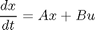
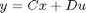
has four states:
beta (sideslip angle), phi (bank angle), yaw rate, roll rate
and two inputs: the rudder and aileron deflections.
All angles and angular velocities are in radians and radians/sec.
Given the matrices A,B,C,D of the trim model, use the SS command to create the state-space model in MATLAB®:
A=[-.0558 -.9968 .0802 .0415;
.598 -.115 -.0318 0;
-3.05 .388 -.4650 0;
0 0.0805 1 0];
B=[ .00729 0;
-0.475 0.00775;
0.153 0.143;
0 0];
C=[0 1 0 0;
0 0 0 1];
D=[0 0;
0 0];
sys = ss(A,B,C,D);
and label the inputs, outputs, and states:
set(sys, 'inputname', {'rudder' 'aileron'},... 'outputname', {'yaw rate' 'bank angle'},... 'statename', {'beta' 'yaw' 'roll' 'phi'});
This model has a pair of lightly damped poles. They correspond to what is called the Dutch roll mode. To see these modes, type
axis(gca,'normal') h = pzplot(sys); setoptions(h,'FreqUnits','rad/sec','Grid','off');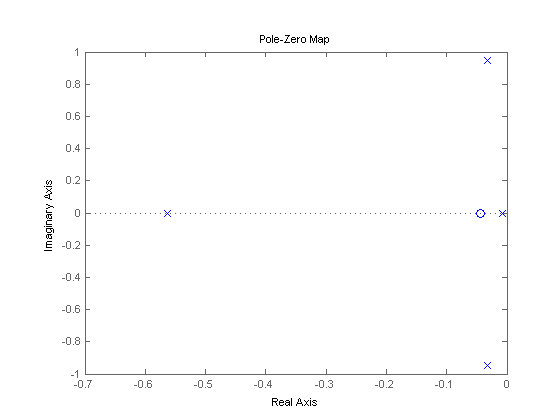
Right-click and select "Grid" to plot the damping and natural frequency values. You need to design a compensator that increases the damping of these two poles.
Start with some open loop analysis to determine possible control' strategies. The presence of lightly damped modes is confirmed by ' looking at the impulse response:'
impulseplot(sys)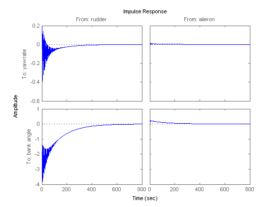
To inspect the response over a smaller time frame of 20 seconds, you could also type
impulseplot(sys,20)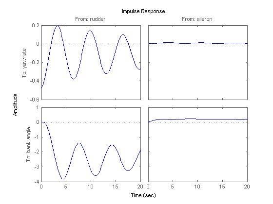
Look at the plot from aileron to bank angle phi. To show only this plot, right-click and choose "I/O Selector", then click on the (2,2) entry.
This plot shows the aircraft oscillating around a non-zero bank angle. Thus the aircraft turns in response to an aileron impulse. This behavior will be important later.
Typically yaw dampers are designed using yaw rate as the sensed output and rudder as the input. Inspect the frequency response for this I/O pair:
sys11 = sys('yaw','rudder'); % select I/O pair h = bodeplot(sys11); setoptions(h, 'FreqUnits','rad/sec','MagUnits','dB','PhaseUnits','deg');

This plot shows that the rudder has a lot of authority around the lightly damped Dutch roll mode (1 rad/sec).
A reasonable design objective is to provide a damping ratio zeta > 0.35, with natural frequency Wn < 1.0 rad/sec. The simplest compensator is a gain. Use the root locus technique to select an adequate feedback gain value:
h = rlocusplot(sys11); setoptions(h,'FreqUnits','rad/sec')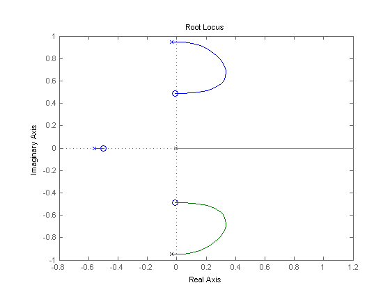
Oops, looks like we need positive feedback!
h = rlocusplot(-sys11); setoptions(h,'FreqUnits','rad/sec')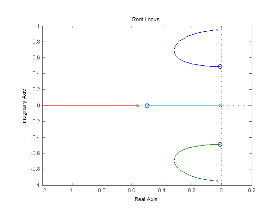
This looks better. Click on the blue curve and move the black square to track the gain and damping values. The best achievable closed-loop damping is about 0.45 for a gain of K=2.85.
Now close this SISO feedback loop and look at the impulse response
k = 2.85; cl11 = feedback(sys11,-k);
Note: feedback assumes negative feedback by default
impulseplot(sys11,'b--',cl11,'r') legend('open loop','closed loop',4)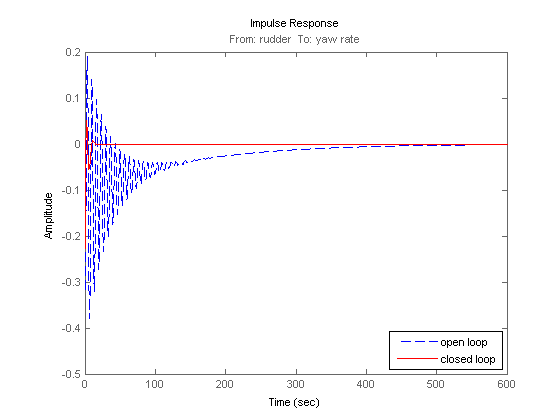
The response looks pretty good.
Now close the loop around the full MIMO model and see how the response from the aileron looks. The feedback loop involves input 1 and output 1 of the plant:
cloop = feedback(sys,-k,1,1); impulseplot(sys,'b--',cloop,'r',20) % MIMO impulse response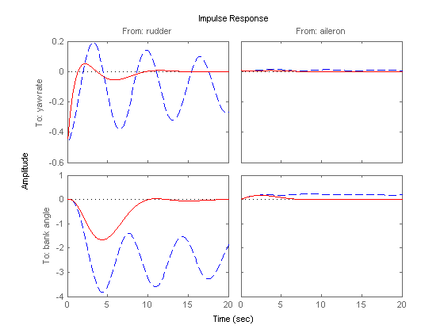
The yaw rate response is now well damped.
When moving the aileron, however, the system no longer continues to bank like a normal aircraft, as seen from
impulseplot(cloop('bank angle','aileron'),'r',18)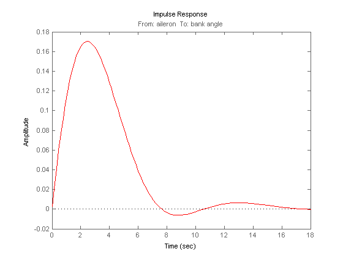
You have over-stabilized the spiral mode. The spiral mode is typically a very slow mode that allows the aircraft to bank and turn without constant aileron input. Pilots are used to this behavior and will not like a design that does not fly normally.
You need to make sure that the spiral mode doesn't move farther into the left-half plane when we close the loop. One way flight control designers have fixed this problem is by using a washout filter.
Washout Filter:
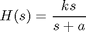
Using the SISO Design Tool (help sisotool), you can graphically tune the parameters k and a to find the best combination. In this demo we choose a = 0.2 or a time constant of 5 seconds.
Form the washout filter for a=0.2 and k=1
H = zpk(0,-0.2,1);
connect the washout in series with your design model, and use the root locus to determine the filter gain k:
oloop = H * (-sys11); % open loop' h = rlocusplot(oloop); setoptions(h, 'FreqUnits','rad/sec') sgrid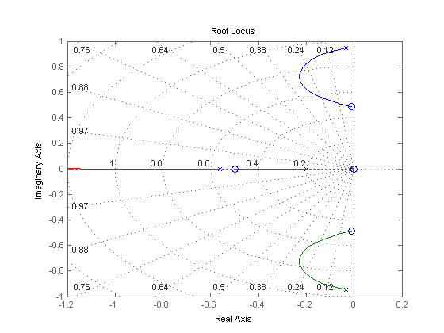
The best damping is now about zeta = 0.305 for k=2.34. Close the loop with the MIMO model and check the impulse response:
k = 2.34; wof = -k * H; % washout compensator cloop = feedback(sys,wof,1,1); impulseplot(sys,'b--',cloop,'r',20)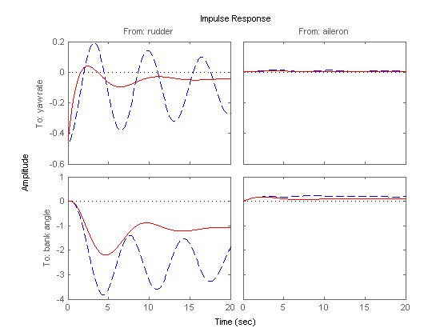
The washout filter has also restored the normal bank-and-turn behavior as seen by looking at the impulse response from aileron to bank angle.
impulseplot(sys(2,2),'b--',cloop(2,2),'r',20) legend('open loop','closed loop',4)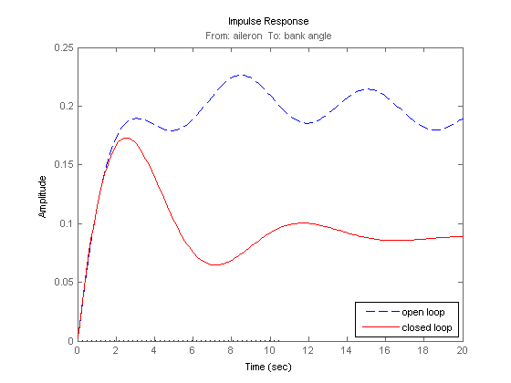
Although it doesn't quite meet the requirements, this design substantially increases the damping while allowing the pilot to fly the aircraft normally.